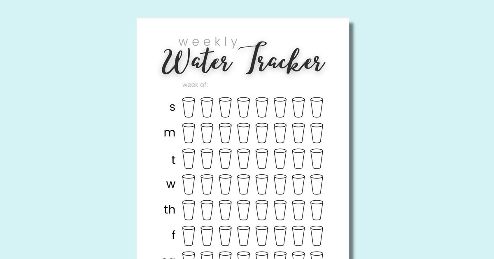

I used to think hydration tracking was for obsessive people. The kind who weigh their food and log their steps and have color‑coded spreadsheets for everything. Then I tried to build a consistent hydration habit myself, and I realized something. Tracking works. Not because you need to obsess over every milliliter, but because your brain needs feedback. Without feedback, you have no idea if you’re actually doing the thing or just thinking about doing the thing. I started with a simple streak counter. Every day I met my fluid goal, I put a checkmark on my calendar. After three days, I didn’t want to break the chain. After seven days, I started planning my day around the checkmark. After fourteen days, I wasn’t even thinking about it anymore. The habit had wired itself. That’s the power of a 14‑day streak. It’s long enough to form a habit, short enough to feel achievable. You’re not committing to forever. You’re just committing to two weeks. Anyone can do two weeks. Here’s how I set up the streak for myself and for my clients. Days 1 to 3: Set a baseline goal that’s almost too easy. Don’t start at 3 liters (101 ounces) if you currently drink 1 liter (34 ounces). You’ll fail by noon and feel bad about yourself. Start at 1.5 liters (50 ounces) for a sedentary person in a temperate climate. That’s about six cups. For most people, that’s one bottle in the morning, one in the afternoon, and one in the evening. Achievable. My client Sarah started at 1.5 liters. She was drinking maybe 4 cups a day before that. The first three days, she felt bloated and peed constantly. That’s normal. Your body adjusts. By day three, her bladder had calmed down. Days 4 to 7: Add the morning 500 mL rule. Keep your 1.5 liter goal, but now 500 mL (17 ounces) of that has to happen within 10 minutes of waking. That 500 mL doesn’t count toward your daytime goal — it’s extra. So total becomes 2 liters (68 ounces). For Sarah, this was harder because she wasn’t a morning person. She kept a bottle on her nightstand and drank it before she checked her phone. By day seven, she was waking up thirsty. Days 8 to 10: Replace one low‑hydration beverage with a high‑hydration one. Sarah was drinking two Diet Cokes per day. We swapped one Diet Coke for a glass of water with lemon. Same volume, better hydration. The BHI of Diet Coke is about 0.89. Water is 1.0. That small swap added about 50 mL of net fluid per day. Not huge, but the habit mattered more than the number. Days 11 to 12: Add an electrolyte drink on workout days. Sarah exercised three times a week. We added a 500 mL electrolyte drink after her workout, on top of her daily goal. So on workout days, her total was 2.5 liters (85 ounces). She said she noticed she felt less sore the next day. That’s the sodium helping with recovery. Days 13 to 14: Evaluate. Check your urine color. Is it pale straw most of the day? Check your energy. Are afternoon headaches gone? Check your skin. Less dry? More clear? Sarah reported that her chronic constipation had improved, her skin looked less dull, and she wasn’t snacking as much in the afternoon because she was drinking water instead of reaching for chips. At the end of 14 days, Sarah had a new baseline. She was drinking about 2.2 liters (74 ounces) per day without thinking about it. She had a morning routine, a bottle on her desk, and a post‑workout electrolyte habit. She didn’t need the streak counter anymore because the habits were automatic. But the streak counter was essential for getting there. It provided the dopamine hit. Every checkmark felt like a small victory. Every missed day was a data point, not a failure. I use a simple calendar on my phone. Some clients use apps. The tool I built has a streak counter built in.Hydration Goal Setter
Set a daily goal, log your intake, and watch your streak grow. The app adapts reminders to your progress.
All data stays in your browser — we never see it.
Daily Water Intake Calculator
Get your personalized goal based on weight, climate, and activity before you start the streak.
All data stays in your browser — we never see it.
Beverage Hydration Index Tool
Find high‑hydration alternatives to soda, coffee, or alcohol.
All data stays in your browser — we never see it.